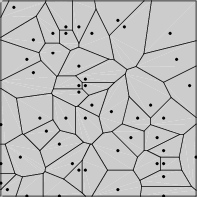
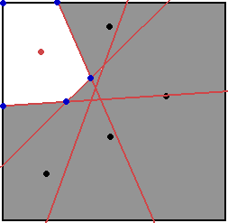

To simulate the destruction of an object in 2D or 3D, an algorithm called Voronoi fracturing (or shattering) exists. It uses a mathematical concept called Voronoi diagram, hence its name. A Voronoi diagram describes the partitioning of the space from a set of points into regions, called cells. The cells are guaranteed to be convex and no overlapped, and will be the shards of the fracture. You can see a representation in 2D below.

(Source)
In this chapter, the algorithm is explained, along with the code, which comes from the demos of Bullet Physics.
The algorithm works using 3D planes. From a 3D mesh, it takes the faces (triangles) and turn them into planes, represented by their equations. The idea is as follows: each shard (cell) is created by taking a Voronoi point, then create more planes, located at half distance between this current point and other ones, in order to generate the boundaries of this cell. The process is repeated for each point.
The pseudo code is shown below (adapted from the forum post of the demo author).
planes = collection of source object faces represented as plane equations
foreach current_point in voronoi_cell_points
copy planes
foreach other sorted_point by distance from current_point
if distance > max_distance
break # rest of sorted points too far, we’re done with this current_point
add new plane to planes, normal and distance = -(sorted_point - current_point) / 2
collect vertices (3-plane intersections) by planes that fall inside all planes only
delete planes that fell outside
max_distance = (furthest vertex from current_point) * 2
we now have vertices and/by planes for one voronoi 3D shard,
process vertices by plane (sort counter-clockwise, etc.) to get faces and edgesA 2D representation of the algorithm at the end of one iteration is shown below. A shard is generated and is represented by the white area. The red point is the current_point, the black ones are the other Voronoi points which are sorted, the black and red lines represent the planes. The blue points represent the vertices at planes intersections.

This is a brute force method because it considers all Voronoi points, not only the neighbours. Another approach is to compute the Delaunay tetrahedralization, which connects points with tetrahedrons. From it, the Voronoi diagram can be extracted, since it is its dual graph. But the method detailed here does not use Delaunay tetrahedralization.
The implementation is adapted from the VoronoiFractureDemo.cpp source code. Assuming that the source mesh and the random Voronoi points are initialized, we begin with creating a function, voronoiMeshShatter(), that takes as arguments the points, the mesh (defined by vertices and triangles indices), its position and rotation. The 2 other parameters here (the density and the world, as a cutom class) are not important for the shattering algorithm.
void Voronoi::voronoiMeshShatter(
const btAlignedObjectArray<btVector3>& srcPoints,
const btAlignedObjectArray<btVector3>& verts, const btAlignedObjectArray<int>& indices,
const btQuaternion& rot, const btVector3& pos,
btScalar matDensity, World& world) {
// srcPoints define voronoi cells in local space (avoid duplicates)
// verts = source mesh vertices in local space
// indices = source mesh vertices indices composing each triangle
// rot & pos = source mesh quaternion rotation and translation
// matDensity = Material density for voronoi shard mass calculation
//…
}Meshes are generally described in local space (the origin is at the center of its vertices), as it is the case here. THe points are also in local space. We will convert them to world space.
// Convert verts to world space
int numverts = verts.size();
chverts.resize(numverts);
for (i=0; i < numverts; i++) {
chverts[i] = quatRotate(rot, verts[i]) + pos;
}
// Convert points to world space
int numpoints = srcPoints.size();
points.resize(numpoints);
for (i=0; i < numpoints; i++) {
points[i] = quatRotate(rot, srcPoints[i]) + pos;
}
sortedVoronoiPoints.copyFromArray(points);
We need to get the planes formed by the faces of the mesh. But how to represent a plane? It can be seen as an cartesian equation ax + by + cz = d where a, b, c and d are the 4 parameters. The vector (a, b, c) represent the normal, the scalar d represents the distance. These values can be stored in the Bullet’s btVector3, which has a “hidden” 4th value that can be accessed with the [] operator, like this: v[3].
Since the mesh is composed of triangles, the planes can be found using some geometry. If v0, v1, v2 are the corner vertices of a triangle, the formulas in pseudo-code:
normal = ( (v1 - v0).cross(v2 - v0) ).normalize();
distance = normal.dot(v0);
The actual code is:
// Get convexPlanes from triangles
int v0, v1, v2; // vertices
for (i=0; i < indices.size();) {
v0 = indices[i++];
v1 = indices[i++];
v2 = indices[i++];
// plane: 4 values stored in btVector3, as equation ax + by + cz = d
// (4th value accessed as plane[3])
plane = (chverts[v1]-chverts[v0]).cross(chverts[v2]-chverts[v0]).normalize();
plane[3] = plane.dot(chverts[v0]);
convexPlanes.push_back(plane);
}
We that the mesh and points are prepared, we can start to create the cells. To do this, the Voronoi points are taken one by one with a loop.
// For each voronoi point
for (i=0; i < numpoints; i++) {
curVoronoiPoint = points[i];
//…
}During the iteration, we will loop over the other points, sorted by the distance to the current point. Thus, we start with the point that is the nearest, then go to the next nearest, and so on. We stop when the distance to the next point is greater than a limit. But before that, we will make the calculations of the planes distances easier by shifting the their equations relatively to the current point.
planes.copyFromArray(convexPlanes);
// Shift all planes relative to current point
for (j=0; j < numconvexPlanes; j++) {
planes[j][3] -= planes[j].dot(curVoronoiPoint);
}
And we sort the points by distance.
maxDistance = SIMD_INFINITY;
// Sort all points by distance from current point
sortedVoronoiPoints.heapSort(pointCmp());
The comparator pointCmp() must be defined elsewhere. Note that curVoronoiPoint also need to be declared outside in order to be accessed from this comparator’s scope.
static btVector3 curVoronoiPoint;
// Comparator to sort planes by distance from curVoronoiPoint
struct pointCmp
{
bool operator()(const btVector3& p1, const btVector3& p2) const
{
float v1 = (p1-curVoronoiPoint).length2();
float v2 = (p2-curVoronoiPoint).length2();
bool result0 = v1 < v2;
return result0;
}
};
Back to the voronoiMeshShatter() function, we can now iterate through the other points, in order to generate a plane at half way between the current and the other point. At the same time we can check the distance limit. If this limit is reached for this point, it is for the next because the points are sorted.
for (j=1; j < numpoints; j++) {
// Create plane at half distance from current and other point
normal = sortedVoronoiPoints[j] - curVoronoiPoint;
nlength = normal.length();
if (nlength > maxDistance) // quit if point is too far
break;
plane = normal.normalized();
plane[3] = nlength / btScalar(2.);
planes.push_back(plane);
With this new plane, we generate the points at the intersection of 3 planes.
// Get vertices by 3 planes intersection, inside all planes
getVerticesInsidePlanes(planes, vertices, planeIndices);
if (vertices.size() == 0)
break;
numplaneIndices = planeIndices.size();
The helper function getVerticesInsidePlanes() is used. It takes the planes as in parameters and vertices and planeIndices as out parameters. vertices are the intersections of 3 planes and which are on the “right” side. planeIndices are the indices of the planes that gave the vertices. The definition of the function is provided below.
void Voronoi::getVerticesInsidePlanes(const btAlignedObjectArray<btVector3>& planes,
btAlignedObjectArray<btVector3>& verticesOut,
std::set<int>& planeIndicesOut)
{
// Based on btGeometryUtil.cpp (Gino van den Bergen / Erwin Coumans)
verticesOut.resize(0);
planeIndicesOut.clear();
const int numPlanes = planes.size();
int i, j, k, l;
for (i=0;i<numPlanes;i++)
{
const btVector3& N1 = planes[i];
for (j=i+1;j<numPlanes;j++)
{
const btVector3& N2 = planes[j];
btVector3 n1n2 = N1.cross(N2);
if (n1n2.length2() > btScalar(0.0001))
{
for (k=j+1;k<numPlanes;k++)
{
const btVector3& N3 = planes[k];
btVector3 n2n3 = N2.cross(N3);
btVector3 n3n1 = N3.cross(N1);
if ((n2n3.length2() > btScalar(0.0001)) &&
(n3n1.length2() > btScalar(0.0001) ))
{
btScalar quotient = (N1.dot(n2n3));
if (btFabs(quotient) > btScalar(0.0001))
{
btVector3 potentialVertex =
(n2n3 * N1[3] + n3n1 * N2[3] + n1n2 * N3[3]) *
(btScalar(1.) / quotient);
for (l=0; l<numPlanes; l++)
{
const btVector3& NP = planes[l];
if (btScalar(NP.dot(potentialVertex))-btScalar(NP[3]) >
btScalar(0.000001))
break;
}
if (l == numPlanes)
{
// vertex (three plane intersection) inside all planes
verticesOut.push_back(potentialVertex);
planeIndicesOut.insert(i);
planeIndicesOut.insert(j);
planeIndicesOut.insert(k);
}
}
}
}
}
}
}
}
(Notes)
Blog posts, use Delaunay
http://www.joesfer.com/?p=60
http://www.joesfer.com/?p=69
Volume Sampler
Seed points
Splitting
Mesh cuts
Hole filling
New faces
Cells for each point
By using Delaunay Tetrahedralization
Dual graph of Voronoi graph
Tetrahedra whose corners are the Voronoi points
Then easily get voronoi diagram from it
Fragments are intersection between mesh and planes
For each voronoi cell C do
For each face F in C do
Obtain the plane P containing F
Split the geometry in two using P, and discard all the polygons on the front side of P
Identify the set of vertices lying exactly on P, and generate a new set of faces filling the hole.
end
end
http://bulletphysics.org/Bullet/phpBB3/viewtopic.php?t=7707
planes = collection of source convex object faces represented as plane equations
foreach current_point in voronoi_cell_points
copy planes
max_distance = (furthest vertex from current_point) * 2 // NOT THERE
foreach other sorted_point by distance from current_point
if distance > max_distance
break # rest of sorted points too far, we’re done with this current point
add new plane to planes, normal and distance = -(sorted_point - current_point) / 2
collect vertices (3-plane intersections) by planes that fall inside all planes only
delete planes that fell outside
max_distance = (furthest vertex from current_point) * 2
we now have vertices and/by planes for one voronoi 3D shard,
process vertices by plane (sort counter-clockwise, etc.) to get faces and edges
Demo code
voronoiConvexHullShatter()
For each Voronoi points
Sort all points by distance to current point
For each other Voronoi points
If distance > max_distance
break
vertices, planeIndices = getVerticesInsidePlanes(planes) {
For each plane i
For each plane j (from i+1)
if i, j non colinear
For each plane k (from j+1)
if j,k and k,i non colinear
if quotient? non zero
calculate potential vertex
if potential vertex inside all planes
store potential vertex and the 3 intersecting planes (i,j,k)
}
if planeIndices not cover all existing planes
(end notes)